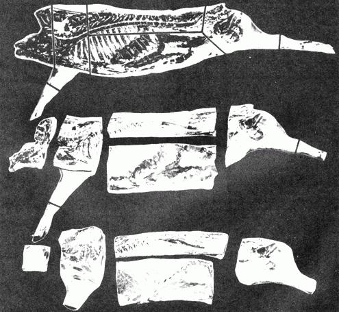

OK, homesteaders . . . here's the second installment of Morton Salt's superior booklet, A COMPLETE GUIDE TO HOME MEAT CURING. MOTHER NO. 17 told you how to butcher, halve and chill a hog. This section takes you most of the way through curing the pork that results.
We'll be serializing more from the Morton Salt handbook in future issues . . . but we still advise you to drop $1.25 into the mail and add the manual to your farmstead bookshelf right now. It's packed with valuable information on butchering, cutting up and curing pork, beef, veal, lamb, poultry and wild game. Get your copy from Morton Salt Company, P.O. Box 355, Argo, Illinois 60501.
Again, our special thanks to Murray J. Pearthree, Morton Salt Regional Sales Manager, for granting us written permission to reprint from the booklet.
It pays to do a neat job of butchering ang trimming
The black guide lines in the picture show where the different cuts should be made for cutting up the carcass. Well trimmed meat cures out better and with less waste. The principal cuts are ham, loin, bacon, shoulder. and jowl. All of the other pieces can be classified as trimmings.
There is both pride and pleasure in unwrapping a neatly trimmed ham, shoulder, or bacon side months after the meat is cured. By doing a neat job of trimming all of the small extra pieces can be used to greater advantage for sausage, head cheese, scrapple, etc. than if they were left on the larger cuts where they would dry up in the cure and be of little value.
Meat should not be cut up and put in cure until it is thoroughly chilled. Bone souring is often the result of meat being improperly chilled or from the application of salt on warm meat. It is often believed that meat should be trimmed and salted as soon as butchering is completed or it will not take the salt properly. Nothing could be further frorn the facts than this, because actual harm instead of good can easily be done by salting warm meat.
When salt is applied on warm meat it helps hold the animal heat in and this heat, along with moisture, gases, and a little blood that is usually in the joints, makes an ideal combination to start bone taint which in a short time may cause souring and spoilage. Meat spoilage can result from a number of causes. If the hogs arc hot and excited when butchered, the meat will be in a feverish condition, making it much easier for souring to start before the meat can take the cure. If a good bleed is not obtained, the excess blood around the joints can easily cause souring to begin. If a good chill is not obtained, the natural bacteria in the rneat multiples faster than the cure can take hold. If salt is applied on warm meat. this can cause souring to start by helping hold the animal heat in the meat instead of allowing it to escape.
Start cutting up the carcass at the shoulder, sawing through the third and fourth ribs at right angles to the back. Each side has 14 ribs.
Complete the cut with the knife and turn the shoulder over and cut off the jowl at a point where the backbone ends, which is in line with the wrinkle of the neck.
Trim some of the cheek meat from the jowl and flatten it out with the broad side of a cleaver or hatchet and square it up by trimming with a knife. The trimmed jowl is known as a "bacon square" and can be cured and used the same as bacon, or used for seasoning with boiled foods.
Remove the neck bone from the shoulder, leaving very little meat on the bone. Trim up the shoulder and cut off the shank. This is the "long cut" method of trimming and will give you the maximum of cured meat from the shoulder. Shank is sawed off above knee joint.
Where smaller cured cuts are desired, the shoulder can be divided between the smallest part of the blade bone, producing a picnic shoulder and butt. The picnic shoulder will cure out quicker than the long cut method and makes a convenient, handy size shoulder for small families. When the shoulder is separated into picnic and butt the clear plate, which is the covering of fat on the top of the shoulder butt, is trimmed off. This fat may be cured for seasoning or used for lard. The lean portion is known as the "Boston" butt and can be cured or used for sausage. When neatly trimmed up the picnic shoulder has the appearance of a small ham.
To take off the ham, saw on a line at right angles to the hind shank and at a point about three finger widths .in font of the aitch bone. Finish the cut with the knife and start shaping the ham by curving the cut on the belly side.
To remove the tail bone slip the knife under the tail bone and continue the cut along the bone, keeping the knife as flat as possible.
If the hams were faced when the carcass was hung up to chill, each ham will now require comparatively little trimming. When the tail bone is removed, the hams should be smoothed up and all loose pieces of meat trimmed off and put in sausage. If these corners and loose pieces are left on the hams, they will dry up in the cure, having little food value, and the hams will be less attractive. Hams that are neatly trimmed cure better and are easier to wrap.
If hams are exceptionally fat, and if too much fat is objectionable, the hams can be skinned. This is done by leaving a collar of skin around one-third of the ham at the shank end. The balance of the fat is trimmed off leaving about Y4 inch of fat over the lean. Skinned hams do not keep as well as hams that are not skinned and for that reason skinning is not recommended as a general practice. After hams are trimmed, saw off the shanks just below the button of the hock.
To separate the loin from from the belly the ribs are sawed across at their greatest curvature. This is about 1/3 the distance from the top of the backbone to the bottom part of the belly edge. Make this cut so as to include the tenderloin with the loin. After the ribs are sawed through, finish the cut with the knife completely separating the belly side from the loin. Lay the belly on the table shin side up and smooth out the wrinkles as well as possible with the palm of the hand. A few sharp blows from the broad side of a cleaver or hatchet will help loosen the spare ribs from the belly.
Now turn the belly skin side down and trim out the ribs. Start this cut by loosening the neck bone at the top of the ribs and keep the knife as flat as possible to avoid gouging the bacon. pull the ribs upward as the cut is made and trim as close to the ribs as you can. The cartilaginous ends or "buttons" of the lower ribs are left on the bacon.
Square up the bacon by trimming the lower edge first to a straight line. All of the "seeds," the mammary glands along the lower edge, should be trimmed out of choice bacon. Next trim the top on a line parallel to the lower edge until a good streak of lean appears and then square both ends enough to reach an attractive lean streak. Frequently there is an uneven space at the fn end of the bacon, which is known as the bacon brisket. This may be cured or used for sausage or hard.
The tenderloin is the small lean muscle which lies underneath the backbone in the rear of the loin. It is one of the most popular of all pork cuts to be used fresh.
It is generally prepared by cutting across into pieces about 1 1/2" thick and Frenching. This is done by placing the pieces of tenderloin on end on a strip of parchment or waxed paper and folding the paper over the top of the meat. The meat is then struck a sharp blow with the flat side of a cleaver, flattening it out. The paper keeps the meat from sticking to the table or the cleaver. These delightful morsels cannot be equalled for tenderness by any rather pork cut.
After taking out the tenderloin, remove fat back from the loin by placing the loin skin side down; set the knife about one fourth inch under the lean or muscle meat, and make a full length cut. Reverse the loin and make the same cut from the other side. This separates the fat back from the loin. The fat lack may be used for lard or may be cured out and used for seasoning when cooking. The remaining fat on the loin should be smoothed up to where it is not over one fourth inch in thickness. The loin is one of the choicest cuts of the carcass and you will note it is made possible by center splitting down the middle of the backbone instead of cutting along each side of the backbone. One of the most practical ways to use the loin is to cure it as Canadian style bacon or grind it rip for making sausage.
After trimming the loin, cut up the other one hall of the carcass starting with the shoulder and finishing with the loin.
It pays to do a neat job of cutting and trimming. You will get a uniform cure and your meat will have a better flavor and a more appetizing appearance.
For Quality Meat remember these important points:
1. Select thrifty hogs of medium weight, 8 to 10 months old.
2. Keep hogs in a small pen 24 hours before butchering-give them plenty of fresh water, but no feed.
3, Sticking is the best method of killing-it is the most practical and most humane.
4. Get a thorough bleed-cleanliness in dressing and a quick, efficient chill.
5. Do a neat job of cutting up the carcass and trimming the pieces. Do not over-cure or under-cure the meat. Curing directions on following pages.
To produce the highest quality cured meat it is important that every step- the selection of the live animal, the butchering and the curing be handled with the utmost care and attention.
The purpose in curing meat is to convert live hogs or other meat animals that are thrifty and in good condition into high quality cured meat products to keep for future use.
The following points are of real importance in turning out high quality cured meat:
1. Be sure that the hogs or other meat animals are quiet and in proper condition when butchered or otherwise the meat may be feverish before it is ever put in cure.
2. Handle the job of butchering, bleeding, and cleaning efficiently and promptly because the natural bacterial action that causes decomposition and spoilage sets in immediately after the animal is killed.
3. See that the meat is chilled as quickly and as thoroughly as possible. Thorough chilling of meat arrests the natural bacterial action and holds it in check until the curing ingredients have a chance to offset further bacteria multiplication.
4. Do a good job of trimming and curing, and test the meat while it is in cure. Use high quality curing ingredients that are especially prepared for the purpose.
5. In general, all meat should be cured at temperatures between 38 and 44 degrees Fahrenheit. Lower temperatures slow the curing process, while higher temperatures can cause spoiling.
There are only two major methods of curing meat; the Dry Cure and the Brine or Sweet Pickle Cure.
The Dry Cure is the method most generally used, especially for the heavier cuts such as hams, shoulders, and bacon. The Sweet Pickle Cure is more generally used for the smaller pieces. Either the Dry or Sweet Pickle Cure is good. The method used is a matter of personal preference.
Morton Sugar Cure and Morton Tender-Quick may be used for either Cure.
The highest quality cured meat cannot be turned out when salt alone is used, because salt alone hardens the muscle fibres and tends to make the meat oversalty and dry.
To produce quality cured meat other ingredients must be blended with the salt in the correct proportions, and when this is done the cure is then termed the "Dry Sugar Cure" if used in dry form, or the "Sweet Pickle Cure" when used in the brine form.
Morton Sugar Cure contains salt, sugar, saltpetre, black and red pepper. a combination of spices. It is available in two forms: without smoke and with natural hickory smoke flavor. This makes it a complete sugar-curing salt, and a complete product of this kind produces the highest quality meat.
Salt is the basic curing ingredient for meat, but to produce product it is necessary to blend the other ingredients with the salt. The sugar tends to retard the hardening action of the salt and gives a more pleasing, milder flavor to the meat. The peppers and spices give a delicious balance to the flavor and improve the keeping qualities after the cure is completed. The saltpetre strikes in ahead of the salt and helps bring out and retain the rich, cherry red color so desirable in cured meats. The natural hickory smoke flavor imparts the flavoring properties of wood smoke to the meat while it is curing. This method of curing and flavoring at the same time saves extra work-does the job safer and adds new delicious flavor to the meat.
Morton's perfectly blended Sugar Cure makes the practical cure for applying on the outside of the meat. In addition to applying Sugar Cure on the outside of the meat a better and more uniform job of curing can be done if the meat is pumped along the bone and at the joints when it is put in cure. Morton Tender-Quick is the ideal product to use for making the pumping pickle.
Tender-Quick is a special cure perfected for the purpose of pumping along the bone area in hams and shoulders, for pumping extra large bacon, and for making into a pickle for curing the smaller pieces.
Tender-Quick consists of the highest grade meat salt and a combination of super-quality curing ingredients so accurately proportioned and so perfectly blended that it produces a fast cure, improves flavor, makes meat more tender, and prevents over-saltiness.
The natural bacteria that are always present in the blood and tissues of live hogs begin to multiply as soon as the hog is butchered.
It is important to get a good bleed and a good chill as soon as possible after the hogs are butchered to help hold this natural bacterial action in check until the curing ingredients have had time to penetrate into the fibres of the meat and set up curing action. A good job of chilling arrests the bacterial action long enough to give the salt and curing ingredients an opportunity to strike in and start the cure. In large pieces of meat, such as hams and shoulders, the bone joints are always the danger spots because bacterial action develops fastest around the bone area. If the meat is not properly bled the many small tendons, ligaments and tiny muscles form a convenient place for the collection of blood. If the meat is not properly chilled out, gases and interior animal heat will be retained. When the cure is appled on the outside of the meat, it must work entirely through the thick meaty portions of the hams and shoulders and into the bone area before the natural bacterial action can be arrested around the hones and joints, and it is in this area that the natural bacteria multiply the fastest and can most quickly cause bone taint.
That is why the easiest, quickest, and safest way to cure hams and shoulders is to pump a pickle made with Tender-Quick along the bone area and apply Sugar Cure in the regular way to cure from the outside toward the center.
Using Morton Sugar Cure and Tender-Quick in this manner is termed the "Combination" cure. TenderQuick cures from the inside bone area outward and Sugar Cure strikes in from the outside.
Tender-Quick makes a perfect pumping pickle. The only practical way to apply the TenderQuick pickle along the bones and at the joints is to dissolve TenderQuick in water, making a pickle which can be drawn up into a Morton Meat Pump and then injected into the meat along the bone. The water used for making the pickle should be boiled first and allowed to cool.
The Tender-Quick pickle, when pumped into the meat, starts curing around the bone area immediately. It does not make the meat over-salty, and helps eliminate bone taint.
As soon as the Tender-Quick pickle has been pumped along the bones, Sugar Cure can be applied on the. outside of the meat in the regular manner. By using this combination cure the cure starts both inside and outside at the same time. The hams and shoulders will be delicately pink, delicious in flavor, and perfectly and uniformly cured throughout, The bone area will be just as well cured as the balance of the ham and there will be no over or under-cured spots. It's the cure itself that makes fine hams and bacon.
Morton Sugar Cure and Tender Quick contain everything necessary for perfect curing everything necessary for perfect curing.
The purpose of pumping meat is to get the curing ingredients distributed throughout the interior of the meat in order that curing can begin or, the inside and cure outward same time that curing begins the outside and works inward.
Cure meat from the inside out at the same time, it is curing; from the outside in. You will get a quicker, more uniform and milder cure with no, over-cured or under-cured spots-no bone taint. Every bit of the meat will be thoroughly cured, mild and delicious in flavor.
Pumping meat is one of the best safeguards against bone taint and bone souring, and especially if the meat were insufficiently chilled or frozen before being put in cure. Pumping meal insures a more uniform cure. It is advisable to pump hams and shoulders next to the bone, as well as large bacon. Pieces such as tongues, dried beef, corned beef, Canadian style bacon etc. can all be improved in mildness and uniformity of cure when pumped.
It require much longer for the curing salt to penetrate into hams and shoulders and set up enough curing action around the bone if the salt is applied only on the outside of the meat. The bone area is the danger zone when curing meat and if the meat around the bones, which is made up of small ligaments, muscles, and connecting tissue, is not thoroughly cured. The whole ham or shoulder is inferior in quality and flavor.
Tender-Quick contains salt and a combination of quality curing ingredients that make it especially suitable for pumping meat. When mixed with water, Tender-Quick goes into solution easily, and, when pumped into the meat, penetrates quickly and uniformly into the meat tissues surrounding the bone.
After the meat has been chilled and cut up, lightly rub the pieces with Morton Sugar Cure and place skin side down on a tilted table to drain for some 6 to 12 hours. Use about 1 lb. for each 100 lbs. of meat. This light application of the sugar-curing Salt will draw the first flush of blood and water from the meat.
After the meat is drained, make a Tender-Quick pumping pickle for pumping the large pieces.
To make the pickle, use water that has previously been boiled and cooled, and mix TenderQuick with the water, stirring until it dissolves.
For curing meat that is to be kept for varying lengths of time the following ratio of water and Tender-Quick should be used:
2 lbs. of Tender-Quick to 3 quarts of water for meat that is to be carried over the summer or for meat that is to be kept 8 months to a year before being used.
2 lbs. of Tender-Quick per gallon of water for meat that is to be kept for only 3 to 6 months.
The amount of Tender-Quick pumping pickle to use is 1 to 1 1/2 oz. of pickle per pound of meat. For ready reference the following shows the amounts of Tender-Quick for making a full strength pumping pickle which is to be used fear curing meat that is kept 8 to 12 months:
2 lbs. of Tender-Quick to 3 quarts of water will make 96 oz. of pumping pickle.
4 lbs. of Tender-Quick to 1 1/2 gallons of water will make 192 oz. of pumping pickle.
8 lbs. of Tender-Quick to 3 gallons of water will make 384 oz. of pumping pickle.
The Morton meat pump holds 4 oz. of pickle. The needle of the pump is hollow and has a number of holes in it. Submerge the entire needle of the pump in the pickle and pull up on the handle to draw the pump full of pickle. When first drawing up the pickle before starting to pump meat, work the handle back and forth a few times to get the barrel full of pickle without air pockets. For the most sanitary job the pump needle should be dipped in boiling water before it is used. and while pumping meat do not touch the needle with the hands or lay it down. When the pump is not in use, let it stand needle end down in the jar or crock that contains the pickle.
Draw the pump full of pickle and insert the pump needle its full length into the meat and push with a slow even pressure on the pump handle to inject the pickle. As the pickle is forced into the meat around the bone, gradually draw the pump toward you in order to distribute the pickle as evenly as possible along the bone.
Pumping meat is simple and anyone can do a good job. The aim is to get the pickle distributed as uniformly as possible along the bone area. Each pumpful of pickle is called a stroke, and after the stroke is completed and the needle withdrawn there will be a tendency for a small amount of the pickle to run out of the meat. Pinch the needle hole together with the thumb and fore finger for a few seconds after the needle is withdrawn.
While the pickle is being injected, the meat around the needle bulges a little, which is all right, but always use a slow even stroke when injecting the pickle.
For hams and shoulders that weigh 10 to 15 lbs. use 3 to 4 pumpfuls of pickle, which will be 12 to 16 oz. For hams and shoulders that weigh 15 to 25 lbs. Use 5 to 6 pumpfuls, which would be 20 to 24 oz. Always have the meat pump full of pickle to prevent air pockets.
The X-ray diagrarns of a ham and shoulder show the bone structure and the lines show how and where the needle of the meat pump should be inserted for making the five different pumping strokes for large hams and shoulders. For small hams or shoulders eliminates strokes Nos. 4 and 5.
For pumping bacon insert the needle in the fat part of the heavy bacon and pump about 1 to 1 1/2 oz. of pickle per pound of meat. The needle can be inserted around the edges and at the ends to distribute the pickle uniformly.
After the pieces have been pumped, apply Morton Sugar Cure, using 5 to 6 lbs. for each 100 lbs. of meat. The first step is to work the Cure around the bones, especially well at the hock and knee joints, working in as much Cure as the skin covering will hold and push it well down. Then rub the Cure in well all over the meat, using a slow kneading motion. Apply the Sugar Cure on both flesh and skin sides. After the Cure has been rubbed over all of the pieces, pack the meat in a convenient place for curing.
Meat can be packed in a box or barrel or on a table. Before the pack is started, sprinkle a little Cure over the bottom of the box and over the pieces as they are packed. The heaviest pieces should be at the bottom and the lighter ones on top. Do not pack the meat over three feet deep. Keep the curing box clear of the ground; bore a few holes in the bottom to let the bloody water drain out.
In mild weather cover the box with a cloth to prevent flies from getting at the meat. In very cold weather the meat should be covered to keep it from freezing. Meat that is allowed to freeze, either before or after it is put in cure, will never make as nice a finished product as if it had not been frozen. When meat freezes. the moisture in the small cells and fibres expands and bursts the meat tissues, which lowers the quality of the finished product. If your meat does freeze, remember that while it is frozen it will not take the Cure, therefore, no curing action can take place so long as the meat remains frozen. The action virtually stops when the inside temperature of the meat gets below 34°. The ideal meat curing temperature is between 38° and 40° and the nearer this temperature the meat can be kept while it is in cure, the nicer the finished product will be. If, due to unusual circumstances meat freezes while it is being chilled, it should be thawed out to about 38° and put in cure. Meat that was frozen when chilling, or frozen while in the cure should be given extra care and attention, and should be used up as soon as practicable after coming from the cure.
After the meat has been in the pack four or five days, break the pack and give a second application of Sugar Cure, using about 2 or 3 lbs per 100 lbs. of meat. Then repack the meat in a different position.
If a real mild cure is desired, do not give the second application to bacon or small pieces. Also the meat is to be used shortly after it comes the cure, the total amount of Sugar Cure used per 100 lbs. of meat can be reduced in proportion. Where meat is to be kept from one curing season to the next, it is necessary to give it a heavier cure-for to 6 lbs. of Sugar Cure per 100 lbs. of meat is enough for a mild cure-8 to 9 lbs. for a full cure.
For hams and shoulders to have the best flavor they should season out after the cure for some 30 to 60 days before being used, and even longer is preferable. Bacon should season out 10 to 15 days before being used.
The amount of Cure to use for 100 lbs. of meat will vary with different sections of the country and with individual preferences. It does not take as much salt to cure meat in high; dry altitude as it does in more humid sections. These points must be adjusted, depending on individual preferences, climatic conditions and length of time meat is to be kept.
Fresh meat is a perishable product and to turn live hogs into quality hams and bacon calls for proper care and attention in doing all parts of the job. There are a number of factors that enter into butchering and curing that have a definite part in turning out quality meat. It is very important not to get the hogs excited or overheated when butchering, If a thorough bleed and a good chill are not obtained, souring can easily start before the meat is put in cure. Regardless of the kind of curing salt used, it is necessary to do a good job of butchering, bleeding. and chilling.
While the meat is in cure. the pack should be broken and the meat overhauled once for smaller pieces and twice for heavier ones. These overhauling periods should be some seven to ten days apart and the Cure should be rubbed on any bare spots.
Meat should remain in cure about 2 days per pound for hams and shoulders and about 1 1/2 days per pound for smaller pieces. For example, a 10 lb. ham should cure 20 days; a 20 lb. ham 40 days; a 10 lb. side of bacon 15 days. Different size pieces should cure in proportion to their weight. Weather conditions help control the length of time meat should cure for best results. It requires longer for meat to take the Cure in real cold weather than in milder weather. Much home cured meat has become over-salty by being left in the cure entirely too long. On the other hand, meat that is taken out of the cure too soon when the weather remains cold may be only partially cured, because meat will not take the Cure when the temperature of the meat goes much below 34°.
After meat wines from cure, wash it in luke warm water. Let smaller pieces soak 30 to 40 minutes and larger ones about an hour. Use a stiff bristle brush to scrub off collected grease and salt. Then hang the meat and let it drain until dry. Do not wrap meat until it is thoroughly dry. In damp weather it is advisable to hang the meat in a warm room or build a small fire to get it dry. This will help prevent mold after the meat is wrapped.
If meat is left exposed to the air, slow oxidation of the fat takes place which causes rancidness, a darkened color, and strong flavor. Proper wrapping prevents most of this trouble and is also one of the best methods of keeping out skippers and other insects. Place a piece of muslin or cheesecloth (cornmeal or flour sacks) on the table and wrap each piece separately. Then wrap in layers of heavy paper and place in strong paper bags. Tie bag tops so insects cannot enter, and hang away. When hung, the pieces should be separated enough not to touch and should be away from walls to keep insects, mice, or rats from reaching the meat. Meat should be hung in a dark, cool, well-ventilated place.
After pumping, rub with Sugar Cure, using about 3 lbs. of salt per 100 Ibs. of meat, and pack the meat skin side down in a well scalded crock or barrel, placing the larger pieces on the bottom and the smaller ones on top. The top layer of meat should be placed skin side up. After the meat is placed in the barrel, mix a curing brine, using 7 Ibs. of Sugar Gure with each 5 gallons of water, stirring it well until the salt is dissolved. The water should have previously been boiled and allowed to cool. Pour this curing brine over the meat until the pack begins to shift or float. This shifting permits the brine to come in contact with all parts of the meat. Place a clean stone or other weight on top of the meat and pour in enough additional curing brine to fully cover the meat. The weight should be heavy enough to hold the meat below the brine.
After the meat has been in the sweet pickle brine about 5 days, remove the meat and brine and repack each piece of meat in a different position, again weighting it down, and pour the brine back over it. Overhaul in this manner every ten days during the balance of the curing period
Bacon should cure about 2 days per pound and hams and shoulders about 3 days per pound. For example, a 10 lb. side of bacon should cure 20 days and a 15 lb. ham 45 days. The ideal curing temperature for the sweet pickle cure is 38° and both the meat and pickle should be at this temperature when put in cure and this temperature held where possible.
If the weather turns mild, watch the brine closely and if it becomes ropy the meat should be taken out and washed and the brine boiled and skimmed, or new brine made if the pickle gets exceptionally ropy.
If a new brine is made. it should not be as strong as the original brine, but its strength should be in proportion to the length of time the meat has been in cure. For example, if the meat has been in cure about one-half the proper length of time, only enough salt should be used to make the new brine about one-half strength.
When the curing time is completed, take out the meat, wash each piece, and let it dry thoroughly and wrap. See directions for washing, drying, and wrapping.
It is important to overhaul by shifting the position of the pieces of meat and getting the curing pickle remixed while the meat is curing.
There are always spots where the meat is in very close contact and the pickle cannot penetrate between the pieces as readily as it should. By overhauling and changing the position of these pieces the pickle is allowed to come in uniform contact with all the parts of the meat.
When the position of the pieces is changed during overhauling, the pickle should be stirred up or poured out of the container and poured back. When pickle is left standing undisturbed, it becomes uneven, which causes the density of the curing ingredients in ratio to the water to be much heavier in one place than another. Removing the meat and pouring out the pickle, then repacking the pieces in a different position and pouring the pickle back over them thoroughly remixes the pickle so that cell parts have the same density. This allows the pickle to come in uniform contact with any spots of the meat that may have been pressed too lightly together.
The water used for making the curing pickle should be perfectly pure. Bacteria and inorganic life, often present in water, do no harm when the water is used for general purposes, but they are harmful when the water is used for curing meat. In order to be sure that the water is pure, it is always advisable to boil the water and let it cool before using it to make a curing pickle.
|
 It pays to do a neat job of butchering ang trimming |
|
|
|
|
|
|
|
|
|
|
|
|
|
|
|
|
|
|
|
|
|
|
|
|
|
|
|
|
|
|